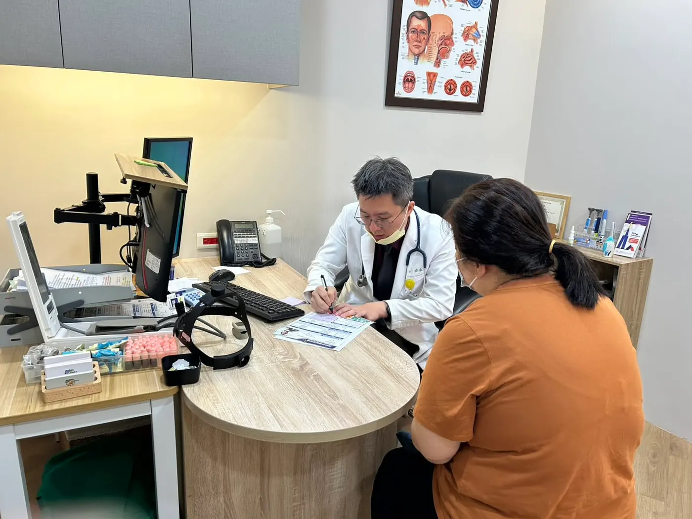
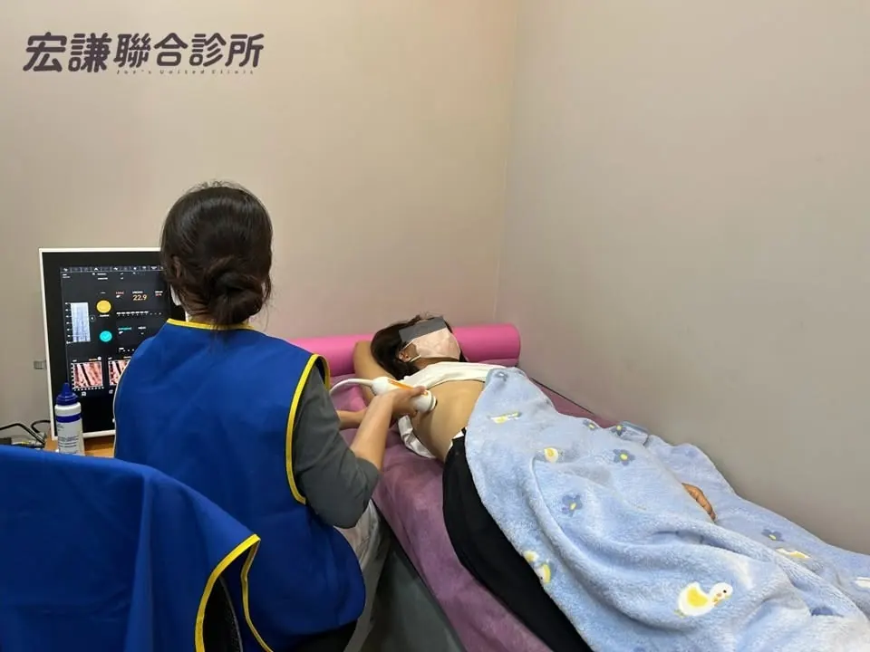
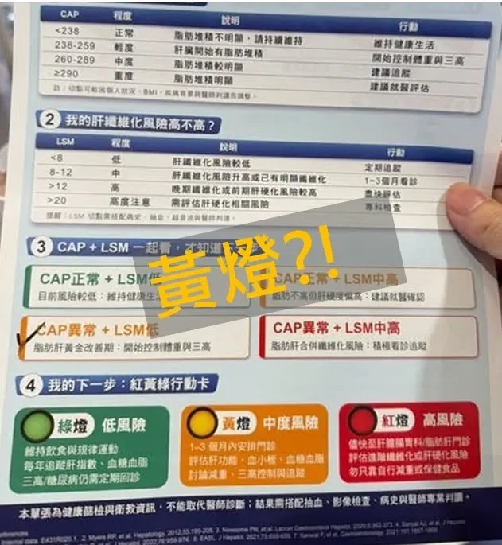

活動紀實2026.09.11
脂肪肝不再只是
一句「回去減肥」
宏謙聯合診所攜手諾和諾德 成雙北首家脂肪肝篩檢專案合作診所

篩檢日這天發生的事
健檢年年出現「脂肪肝」，除了少吃、多運動，下一步呢？9 月 11 日上午，宏謙聯合診所攜手諾和諾德舉辦脂肪肝掃描活動，成為該公司脂肪肝篩檢專案在雙北地區的首家合作診所。活動為約 30 位民眾完成肝臟掃描，每份報告均由家醫科院長親自判讀、當面解釋。
此次採用 FibroScan 肝臟掃描，約 5 至 10 分鐘即可完成，不需抽血，以非侵入方式定量評估肝臟脂肪堆積與硬度，讓民眾透過數據了解肝臟「有多油、有多硬」，並由醫師判讀脂肪肝及肝纖維化風險。民眾完成掃描後，隨即回到診間，由院長結合病史與既有檢查資料，說明結果及後續處理方向。

「我們不希望病人每年都看到脂肪肝，卻每年都不知道該怎麼辦。看脂肪肝，不是只告訴病人『你太胖了，回去減肥』。我們要把三件事說清楚：目前風險在哪裡、需要怎麼處理、什麼時候回來追蹤。檢查只是開始，後面的照護才是重點。」
當天完成檢測的民眾中，有 21 位經醫師判讀需進一步評估肝纖維化風險，診所將依個別情況安排追蹤或轉介。
有參與民眾聽到自己肝纖維化顯示中度風險的黃燈，當場驚問「那怎麼辦？」經醫師解說後，清楚了下一步目標。參與活動的黃小姐說：「以前早就知道有脂肪肝，但報告收起來就沒再管。這次醫師把數字代表什麼、接下來要做什麼講清楚。」
宏謙的脂肪肝與代謝照護
脂肪肝很少單獨出現，它和腰圍、血糖、血脂、血壓常常是同一件事的不同面向。宏謙聯合診所專精脂肪肝與代謝管理：從脂肪肝篩檢與風險評估開始，接著把體重管理、糖尿病與三高照護放進同一個計畫裡，一次處理。
- 脂肪肝篩檢與評估結合肝功能、血糖血脂、腹部超音波與病史，由醫師判讀脂肪肝與肝纖維化風險，並說清楚下一步。
- 體重管理與健康減重門診肥胖症專科認證醫師，依個別狀況安排飲食調整、治療評估與定期追蹤。
- 糖尿病與三高整合照護糖尿病、腎臟病與代謝症候群照護網責任診所，長期追蹤血糖、血壓、血脂與尿酸。

我們看肝，也看腰圍、血糖、血脂和血壓
「脂肪肝往往牽涉一整組代謝問題。我們看肝，也看腰圍、血糖、血脂和血壓，把這些問題一起處理，才是完整的照護。」院長說。
此次合作把肝臟掃描帶進社區，讓民眾在熟悉的診所完成檢測，並接續後續照護。
擔心脂肪肝？來宏謙聊聊下一步
適合安排評估的人：
- 健檢報告寫著「脂肪肝」，但從來沒有人跟您說下一步
- 腰圍偏粗、血糖或血脂偏高，或已在控制三高
- 肝指數（ALT、AST）反覆偏高卻找不到原因
- 正在減重，想知道肝臟有沒有跟著改善
關於宏謙聯合診所
宏謙聯合診所榮獲「糖心胖三合守護計畫」全國特優，並獲國健署「代謝症候群防治」績優診所肯定、衛福部健保署「糖尿病及初期腎病照護」品質獎勵，以及「腎病識能友善績優診所」殊榮，持續深耕代謝健康與慢性病整合照護。
本頁內容為健康衛教資訊，不能取代醫師診斷；檢查結果需搭配抽血、影像檢查與病史，由醫師綜合判斷。各項檢查與治療是否適合您，請至門診由醫師評估。